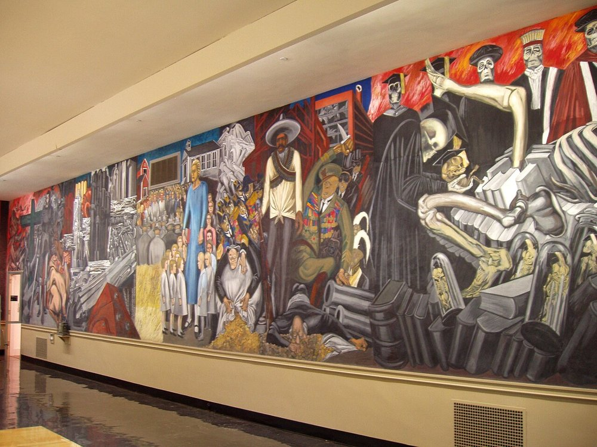

The Epic of American Civilization (section)
José Clemente Orozco · 1932–34 · Fresco · Baker Memorial Library, Dartmouth College, Hanover, New Hampshire
In copyright. Look and learn: shown for study, not for download. · Photo: Daderot, CC BY-SA 3.0
Orozco painted these frescoes between 1932 and 1934 in the basement reading room of the Baker Memorial Library at Dartmouth College; there are 24 panels. A group of Dartmouth parents who called themselves the Boston Mothers wrote to the college president, Ernest Hopkins, asking that the pictures be destroyed. Hopkins, a lifelong Republican, defended Orozco's right to paint as he chose. The mural was made a National Historic Landmark in 2013.